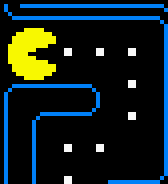
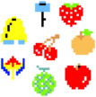

How to play Pac-Man
The objective of the game is to eat Pac dots and avoid four ghosts which will be drifting through the maze potentially trying to capture the player.Pac dots are the small, yellow squares (worth ten points each) scattered through the maze which at the end of the game, will be counted and displayed as the players score.
There are also fruits/objects dispersed through the maze at times, these are bonus items that multiply the players score at the end of the game they also give the player additional points. cherry= 100 points, strawberry= 300 points, orange= 500 points, apple= 700 points, melon= 100 points, galaxian boss= 2000 points, bell= 3000 points and key=500 points
Four energizers are also placed randomly through the maze. If the Pac-Man eats an ergerizer all the ghosts turn blue for while and run away from you, but keep in mind this only occurs for a few moments. During this time if you can eat a ghost you will gain 1600 points per ghost and an additional 50 points for eating the actual energizer.
There are many tips and tricks Sto play Pac-Man but one way to almost never get caught by the ghost is to follow them. This is a good strategy because the ghosts cannot change the thier direction and once you are behind them it is an excellent way to keep track of them. Another tip is to use power pellets to your advantage because power pellets make the player move faster which decreases the rate which the ghosts can catch you.
Below is a pacman tutorial to help beginners pacman tutorial